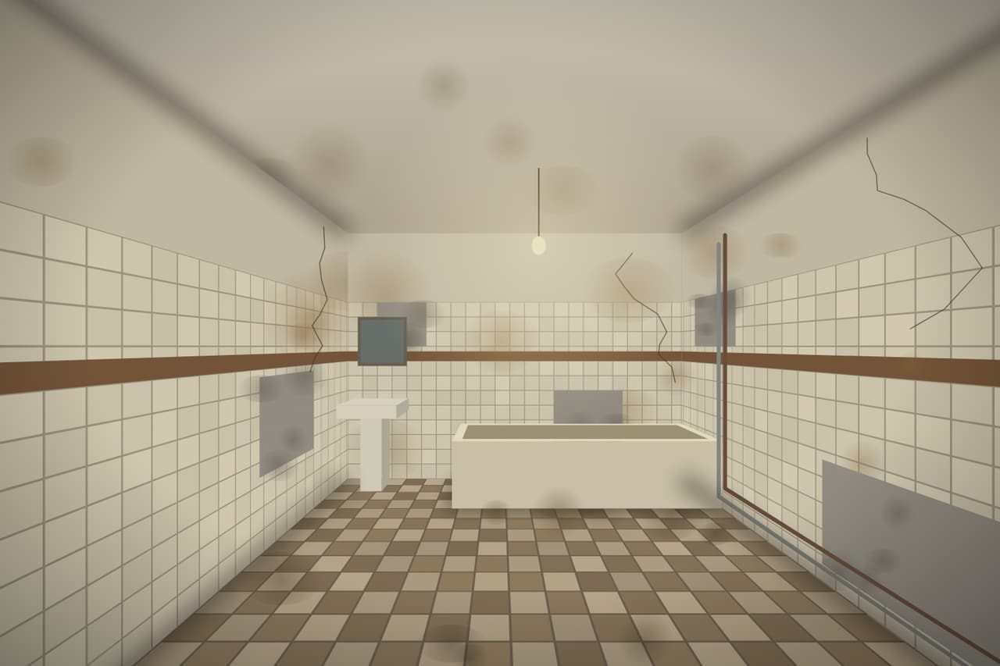
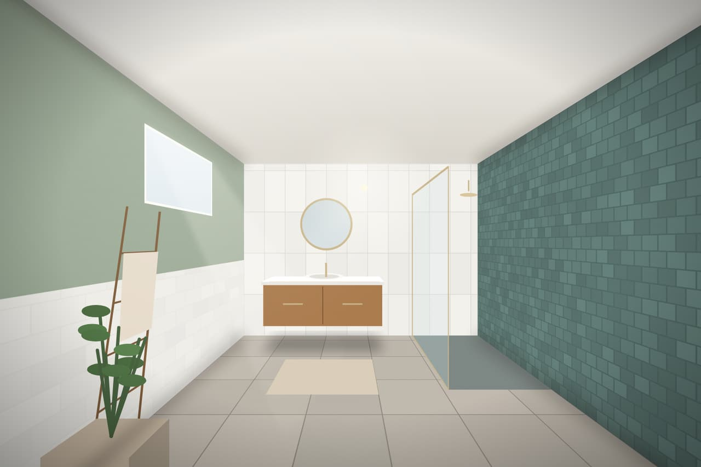
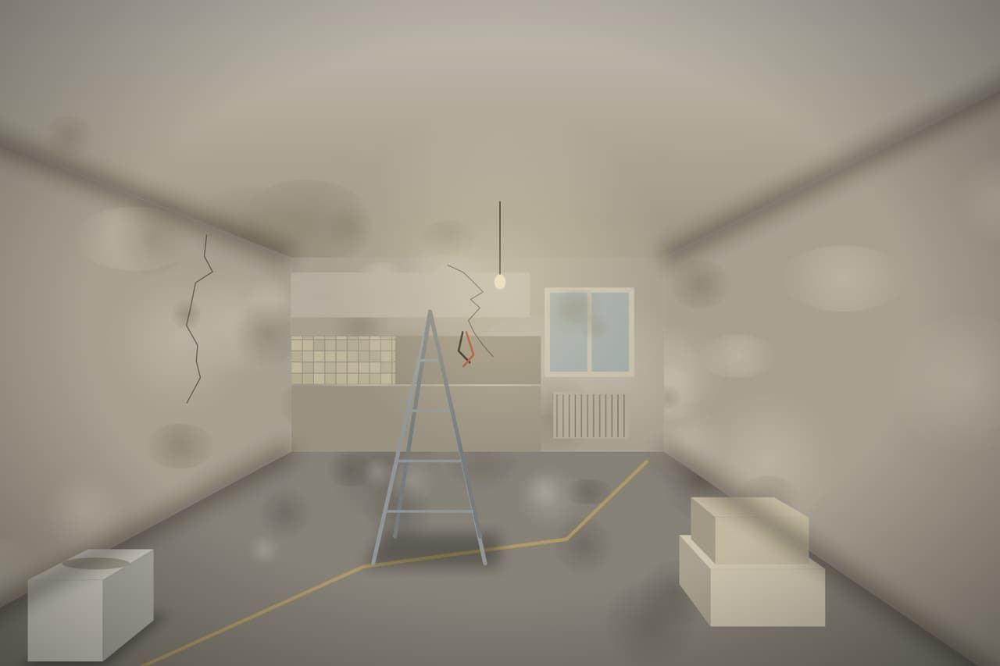
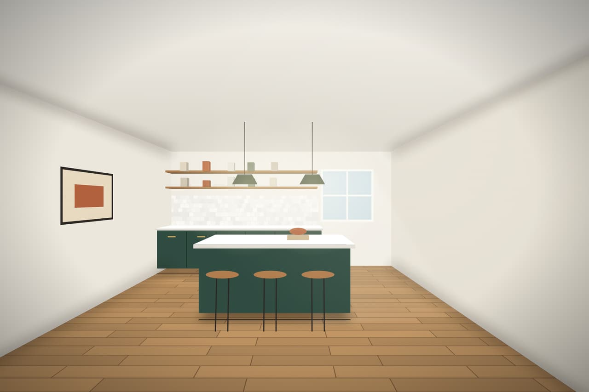
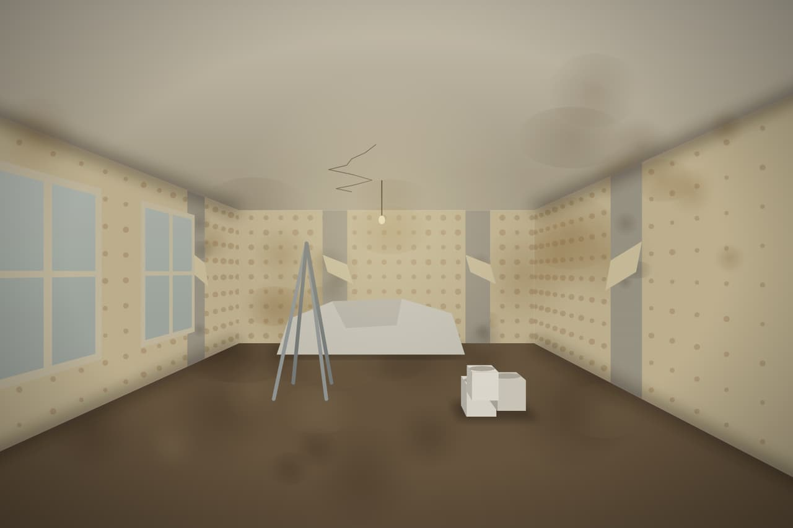
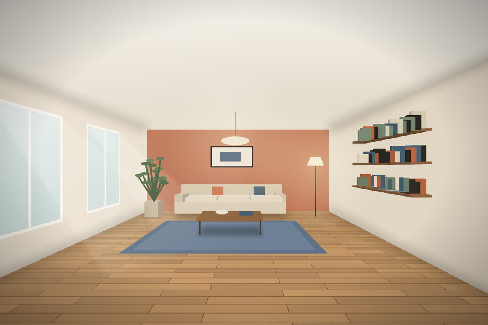

Ormelle · rénovation intérieure
Le même lieu, le premier et le dernier jour
Deux façons de montrer un chantier : un réglet qu'on fait glisser entre l'avant et l'après, ou une vitre embuée qu'on essuie pour découvrir la pièce finie.
Chantiers livrés
Faites glisser le réglet
Trois pièces photographiées depuis le même point, le jour du devis et le jour des clés. Le réglet se prend à la souris, au doigt ou au clavier.
- 3 chantiers
- 9 à 28 jours
- 1 interlocuteur

Avant
Après
Avant
Après
Avant
AprèsLe jour des clés
Essuyez la vitre
La buée d'un chantier qui s'achève : passez la main sur la vitre pour découvrir la pièce finie. Au clavier, « Tout voir » fait le geste à votre place.
Avant
Après
Avant
Après
Visuels de démonstration rendus pour la bibliothèque : remplacer par les photos du client, prises du même point.